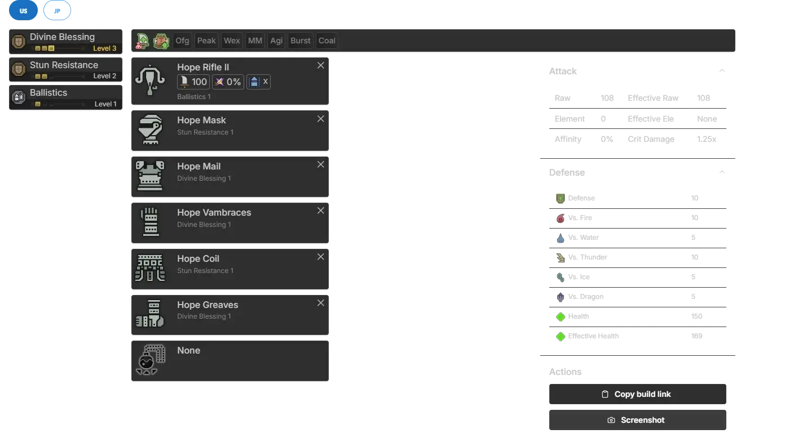
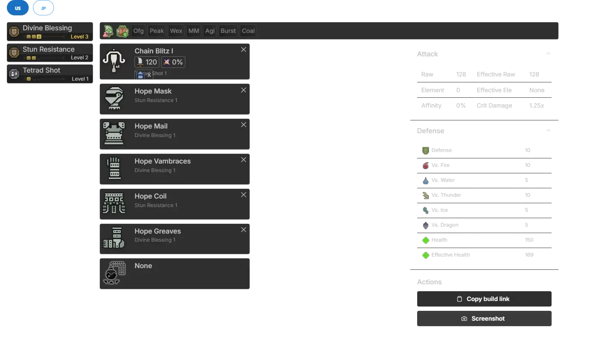
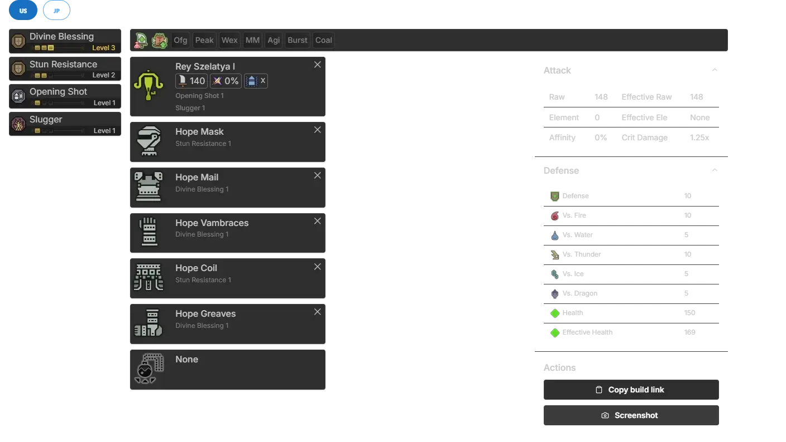
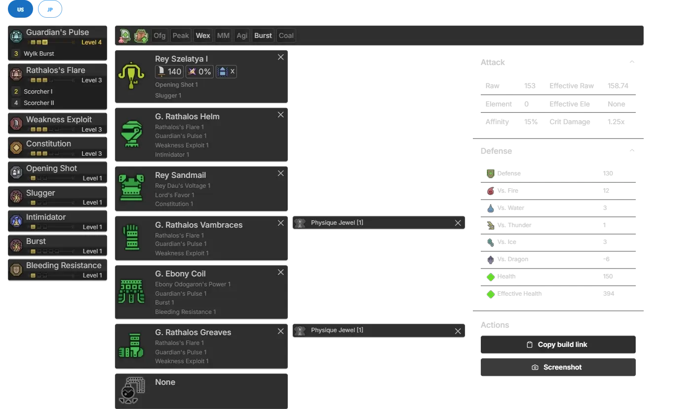
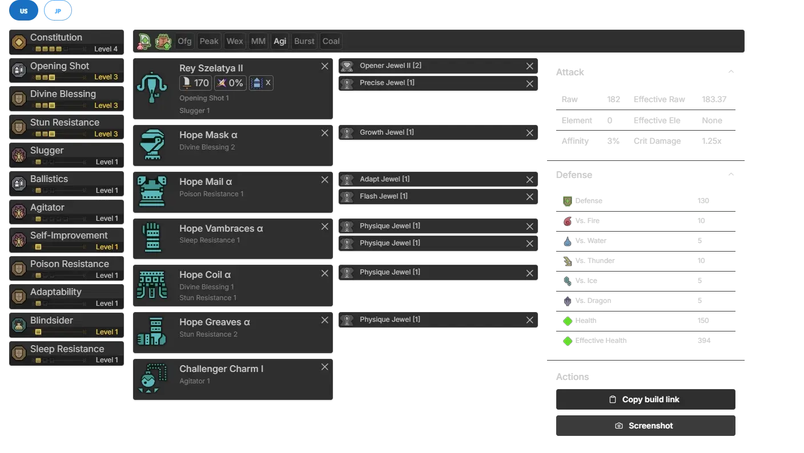
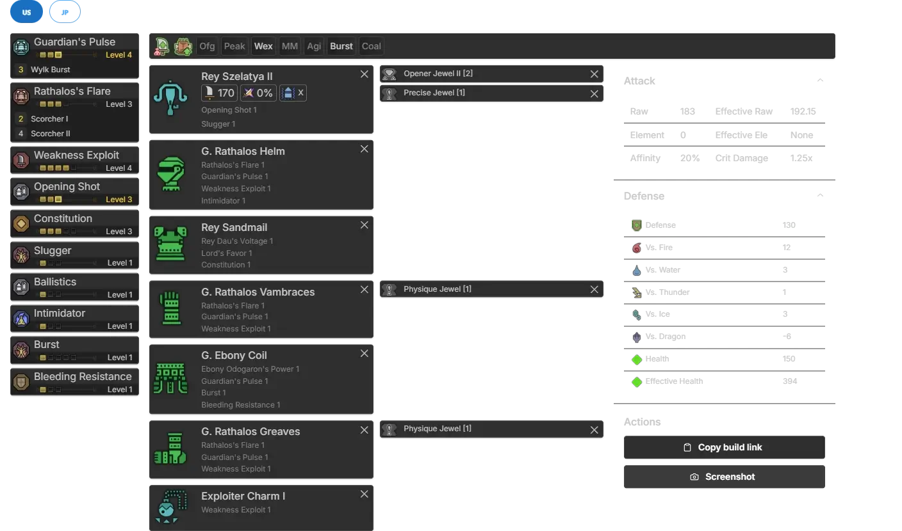
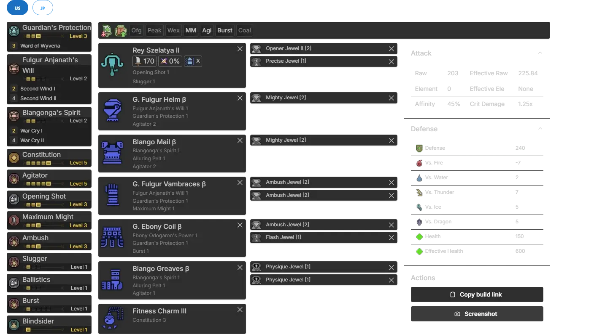
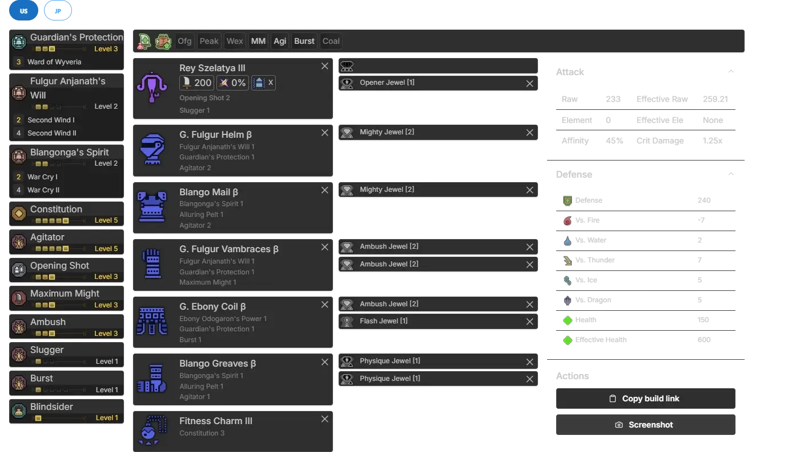
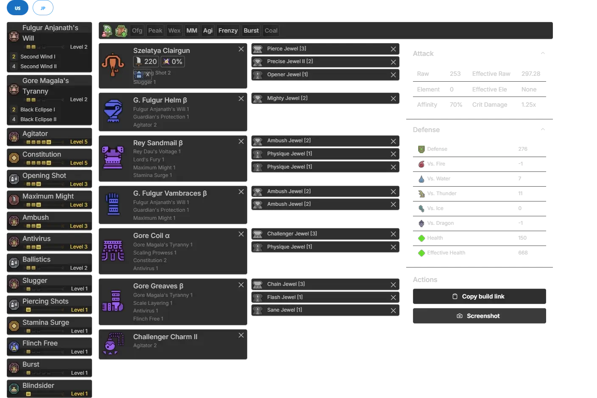

These builds are intended to be used from the beginning of the story through to HR40+, where you are able to begin seriously working towards getting finished meta sets. These builds, for obvious reasons, won’t be as optimized or as high budget as the endgame builds, but should serve as stepping stones to get you to them.
Throughout early Low Rank, you’ll just be upgrading your Bowgun a few times. Once you reach Chapter 3 of the story, you may optionally upgrade your armor set, or just continue powering through to early High Rank.
 Open image in new tab Fig. 2.1A - Early Low Rank Build (Builder Link, opens in new Tab)
 Open image in new tab Figure 2.2A, Upgrade to Ore Bowgun (Builder Link, opens in new Tab)
Upgrade to the Ore Bowgun when you have the materials to do so.
 Open image in new tab Figure 2.3A, Upgrade to Rey Dau Bowgun (Builder Link, opens in new Tab)
After hunting Rey Dau, craft the Rey Dau Bowgun. You’ll be using this for a while.
 Open image in new tab Figure 2.4A, Optional Chapter 3 Upgrade (Builder Link, opens in new Tab)
This is an optional set upgrade available midway through Chapter 3 of the main story. This build can be skipped in favor of rushing to the Early HR build (Section 2.5) below, but it is recommended to craft if you have the materials available as it provides higher damage and similar defense to that set.
 Open image in new tab Figure 2.5A, Early HR Set (Builder Link, opens in new Tab)
Upon reaching High Rank, you should craft the Hope α set above only if you did not choose to upgrade to Late LR armor (Section 2.4) so that you can maintain enough defense through early HR. The Rey Szelatya II and Challenger Charm I are both craftable with Rathian parts.
 Open image in new tab Figure 2.6A, Alternate Early HR Set (Builder Link, opens in new Tab)
This build is an alternate to the build found in Section 2.5, to be used if you chose to make the Late LR Build (Section 2.4). This build has slightly more damage, while the other option is a bit more comfy.
 Open image in new tab Figure 3.1A, HR21+ Second Wind Build, “based” - Damo (Builder Link, opens in new Tab)
After reaching HR21, you have access to HR Guardian monsters, which unlocks several new skills. This build leverages Second Wind 1 and Constitution 5 to maintain Maximum Might uptime while chaining Burst Steps (see Weapon Guide Section 5.2.2 for an explanation on this mechanic), with Agitator 5, Burst 1 and Ambush 3 for added raw damage.
 Open image in new tab Figure 3.2A, HR31+ Second Wind Build (Builder Link, opens in new Tab)
HR31 allows you to upgrade your Bowgun again after a certain story quest. What you place in the open 3 slot is up to what decos you have available. Pierce Jewel 3, Salvo Jewel 3, Crit Boost 3 or Precise 3 are possible options, in order of effectiveness.
 Open image in new tab Figure 4.1A, FulGore Build (Builder Link, opens in new Tab)
After reaching HR41 and completing Chapter 6, you unlock endgame equipment. The build above is a middle ground between the HR21 Second Wind build and the endgame meta builds, to be used while working towards making meta sets. If you don’t have a Pierce Jewel, use Salvo or Critical Jewel instead.